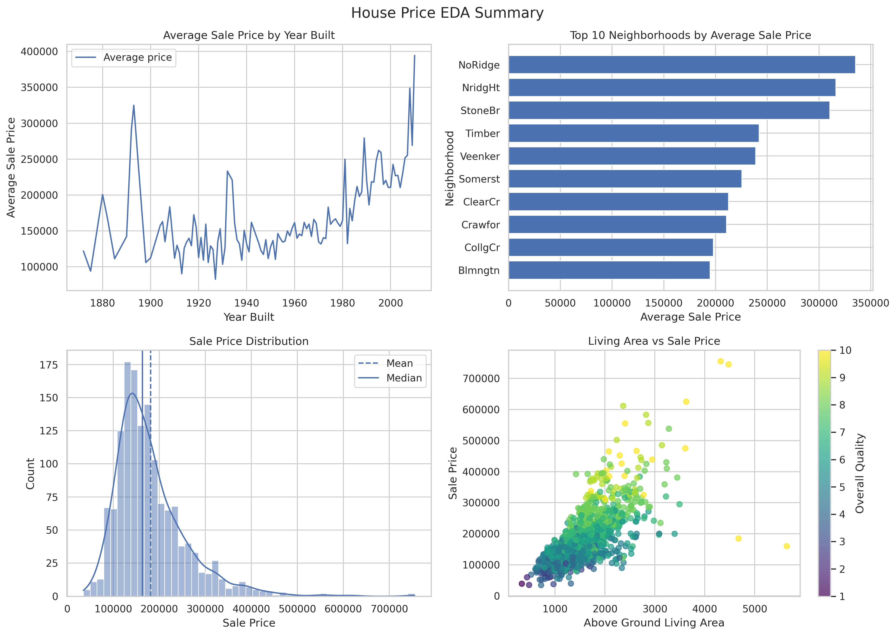

Project Overview
This project explores the Ames Housing Dataset to understand house price distributions, relationships between variables, outliers and data quality using exploratory data analysis.
Dataset Overview
1,460
Rows
81
Original columns
10
EDA steps
Tools and Technologies
Python | Pandas | NumPy | Matplotlib | Seaborn | SciPy | Jupyter Notebook
Key Findings
- SalePrice distribution is right-skewed.
- OverallQual has a strong positive correlation with SalePrice.
- GrLivArea is strongly associated with SalePrice.
- NoRidge has the highest average sale price among the five neighborhoods examined.
- Outliers were examined using IQR and Z-score methods.
Final EDA Dashboard

Conclusion
Exploratory Data Analysis helped identify important patterns, relationships, outliers and data quality issues in the Ames Housing Dataset without applying machine learning.